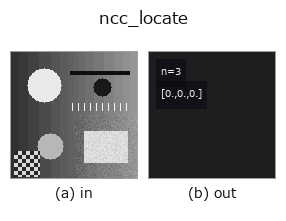

matching op• Data kinds: image → match
• Call: fullseye.apply(img, "ncc_locate", a=0.5, b=0.5) (the 2-D model is one image plus two scalar knobs a,b∈[0,1])
• HALCON equivalent: find_ncc_model (the HALCON reference is a useful guide to its meaning and parameters)

*The figure is the actual output on a synthetic 128×128 input. Left: input, right: output. Point clouds are drawn as a top-down scatter (brightness = z), 1-D series as a line plot, volumes as the maximum-intensity projection along z, videos as the middle frame, complex images as magnitude; return values that are not pictures are shown as the values themselves.*
*Knob a does not change the output (measured: identical at 0.1 / 0.5 / 0.9).*
*Knob b does not change the output (measured: identical at 0.1 / 0.5 / 0.9).*
Finds the best position using template matching based on normalized cross-correlation (NCC). Equivalent to HALCON's `find_ncc_model` (Find the best matches of an NCC model in an image.).
> The detailed description below is the original text — the summary and the headings are translated.
`a, b は未使用——テンプレートは引数ではなく set_match_template でスレッドローカルな _MATCH_CTX に事前登録しておく（マッチング系 op 共通の作法、_MatchCtx の docstring 参照）。_ncc_map（NCC 相関マップ、Lewis 1995 の定義で [-1,1]）を計算し、その最大値の位置を [相関値, y, x] で返す。テンプレート未設定、または入力が 2 次元画像でない場合は [0,0,0]（no-match）を返す——fail-closed。回転・スケール変化には非対応（_shape_locate` は回転を扱う）。
• gallery2d_contour_measure family guide
• Sample-data catalog (download URLs / licences) — 2-D uses skimage.data (BSD/public domain) plus synthetic images; 3-D lists download URLs for real data sources (Stanford, PDS, …).
• Operator provenance and references — the sources of the research/methods this op family came from.
• The canonical algorithm (author, year) and its uses are named in the family usage guide above.
The program below has been verified to run (same input as the figure). In Studio's help this block becomes buttons that load and run it on the spot.
ncc_locate 0.50 0.50
▸ Load this pipeline · Load & run
• gallery2d_contour_measure — py -3.11 examples/gallery2d_contour_measure.py
• poc_search_sweep_width — py -3.11 examples/poc_search_sweep_width.py
• poc_template_tracking — py -3.11 examples/poc_template_tracking.py
match as input)matching)*Provenance: ops.py — 2D operator registry. This per-op note is generated by tools/opdocs.py md (do not hand-edit).*
© 2026 Kazufumi Furuse — Fullseye operator documentation. Licensed under Apache-2.0.